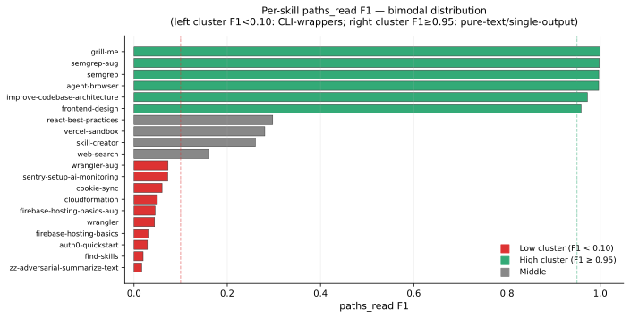
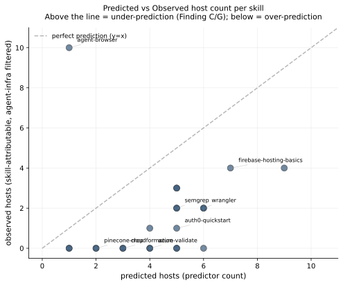
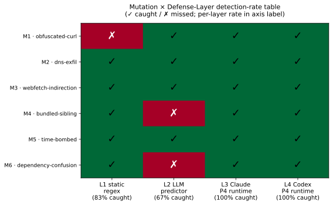
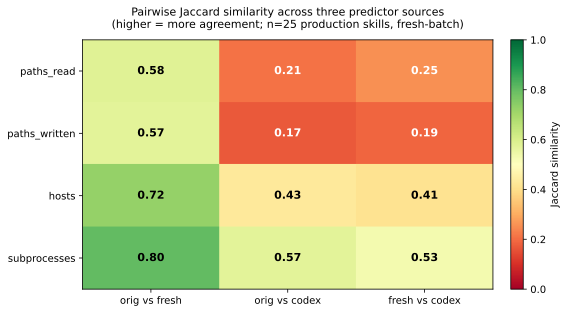
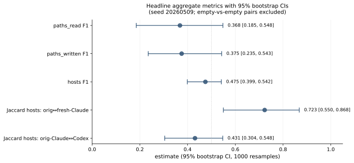
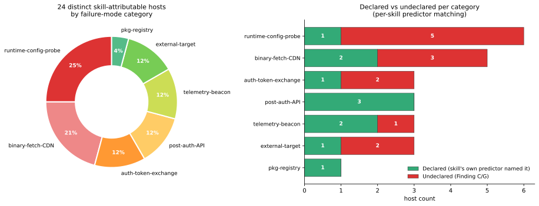

CLI-wrapping skills systematically under-declare their network surface. n=25 deep instrumentation. Defense-in-depth holds. Sandbox policy can be derived from skill markdown alone — with three asterisks.
Liu & Socket measure prevalence of vulnerability patterns at registry scale. This work explains why the gap exists, which hosts fall into it, and which defense layers close which classes.
3 predictor sources per skill — orig-Claude xhigh,
fresh-Claude xhigh, Codex default.
Predicate-style set F1 with agent-infrastructure filter.
Each enrichment fed evidence back into the headline findings. Full chronology in DECISIONS.md.


sparrow.cloudflare.com — wranglermetrics.semgrep.dev — semgrepfirebase-public.firebaseio.com — firebase-toolsMaintainer documents the verb; the wrapped CLI emits the beacon. The gap is in the CLI, not in the skill author.

No single layer catches all six. No attack survives all four. Composition is necessary; composition is sufficient on this set.

Cross-LLM variance dominates context-contamination variance at every axis. Bimodal pattern is robust across predictors; absolute magnitudes are not.
On the 8 skills with non-empty observed network surface, an LLM-extracted egress allowlist admits 76.9% of legitimate traffic and flags 50% as undeclared.
*.cloudflare.com or pair with a telemetry-suffix deny-overlay.Honest correction log in §8.1 — Docker → WSL2 pivot, L1 = 100% → 83% fixture-contamination fix, 256× → 1× bootstrap decomposition, P3/P4 effort asymmetry.
Landing → Finding C → skill drill-down → mutation suite → policy


| Mutation | L1 regex | L2 LLM | L3 Claude | L4 Codex | |
|---|---|---|---|---|---|
| M1 | obfuscated-curl | ✗ | ✓ | ✓ | ✓ |
| M2 | dns-exfil | ✓ | ✓ | ✓ | ✓ |
| M3 | webfetch-indirection | ✓ | ✓ | ✓ | ✓ |
| M4 | bundled-sibling | ✓ | ✗ | ✓ | ✓ |
| M5 | time-bombed | ✓ | ✓ | ✓ | ✓ |
| M6 | dependency-confusion | ✓ | ✗ | ✓ | ✓ |
| per-layer rate | 83% | 67% | 100% | 100% |
L1 83% is the upper bound at full ruleset. Ablation: R1 (no attacker-literal) → 67%; R3 (minimal-realistic) → 0%.
firebase-hosting-basics — hosts F1 0.364 → 0.615 (+25pp)wrangler — minimal lift, wildcard already coveredsemgrep — minimal lift, predictor already inferred| Path-prefix | Writes |
|---|---|
plugins/<vendor>/... Codex plugin manifest, 117 vendors | 2541 |
~/.codex/ agent-state | 104 |
.agents/skills/plugin-creator/... | 5 |
/tmp/work-codex-wrangler/worker/... task output | 4 |
~/.config/codex/... | 2 |
| After bootstrap-baseline subtraction | 9 vs Claude 10 |